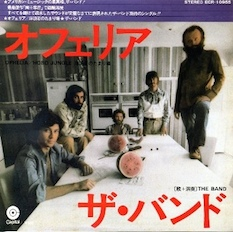

Day 25

The Band - Ophelia - Northern Lights – Southern Cross - 1975
这个乐队是我在看卡罗尔和星期二（BTW， 渡边老贼翻车了，看三集就看不下去了）的时候发现的。
Boards on the window, mail by the door
What would anybody leave so quickly for?
Ophelia - Where have you gone?
The old neighborhood just ain't the same
Nobody knows just what became of
Ophelia - tell me, what went wrong?
Was it somethin' that somebody said?
Mama, I know we broke the rules
Was somebody up against the law?
Honey, you know I'd die for you
Ashes of laughter, the coast is clear
Why do the best things always disappear
Like Ophelia - please darken my door
Was it somethin' that somebody said?
Honey, you know we broke the rules
Was somebody up against the law?
Honey, you know I'd die for you
They got your number, scared and runnin'
But I'm still waitin' for the second comin'
Of Ophelia - come back home